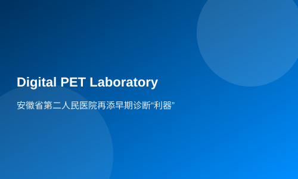

安徽省第二人民医院再添早期诊断“利器”
新华社客户端合肥2月23日电（记者戴威）23日，中国高端医疗器械代表成果全数字PET/CT开机仪式在安徽省第二人民医院举行，全数字PET临床诊疗研究中心也在当日正式揭牌。
数字PET作为中国高端医疗器械代表性成果，由中国科研团队历经二十年研发，由锐世医疗公司进行产业转化。据介绍，安徽省第二人民医院是安徽省卫健委直属的三级甲等综合性医院，医院学科齐全，综合诊疗水平高，拥有高能直线加速器、3.0T核磁共振等多款先进高端医疗装备。业内专家认为，此次数字PET装机安徽省第二人民医院，是医工交叉合作典型案例，一方面为精准治疗、早期诊断提供了利器，一方面有利于进一步扩大数字PET应用场景，从而保证国产高端医疗器械“人有我优”的迭代路径，助力产业做大做强。
中国医学影像技术研究会核医学分会主任委员、中国科学技术大学附属第一医院（安徽省立医院）核医学科主任王雪梅认为，全数字PET/CT最令人印象深刻的，是它极快的成像速度。“这台设备能在20秒内完成单个床位的扫描成像，全身扫描仅需135秒，这意味着病人的扫描时间至少缩短为过去的六分之一，显著提升检查效率；与此同时，这台设备要求患者注射示踪剂的剂量比常规的剂量低，这样可以大大降低药物购买成本。”王雪梅说。
安徽省第二人民医院核医学科主任冒斌介绍，数字PET在精准定量方面有突出优势，这对于消化系统疾病，包括食管、胃、肠、肝、胆、胰等脏器的器质性和功能性疾病，尤其是消化系统恶性肿瘤等重大疾病的早期诊断和精准治疗意义重大，并能有效改善预后。有了数字PET这一诊断利器，有望令该院消化病专科综合实力再上一个台阶。
冒斌表示，此前，像PET这样的高端医疗设备，技术和市场长期为西方大型医疗企业所垄断，近年来，随着国家科技实力的提升，涌现出一大批像数字PET这样的国产高端医疗器械代表产业。不仅在产品上实现了国产替代，更是从多方面的产品指标上实现了赶超和引领，为医院提供了早期诊断和精准治疗的利器。
锐世医疗总经理张博介绍，到目前为止，数字PET共6款设备获得三类医疗器械注册证进入市场，其中有4款设备都在2023年集中取证，形成了丰富的产品矩阵。
2021年8月，数字PET作为合肥高新区“双招双引”项目正式入驻合肥。合肥市产投集团领投第一轮股权融资。锐世医疗副总经理陈方介绍，落地合肥以来，数字PET产业化发展也迅速步入快车道，实现了海外销售。据了解，最近，该公司还在山东费县开辟了新的生产基地。
合肥产投资本管理有限公司总经理李中亚表示，从行业规律看，锐世医疗的产业化进度整体超出预期。“锐世医疗落地合肥前，我们已经花了很长时间跟踪研究，企业有很好的产业基础。按高端医疗器械的发展规律，拿到三类注册证的平均时间是7年至8年，目前团队取得的这一系列进展，已经超出我们预期了。”李中亚说，“从0到1的技术门槛才是最高的，团队已经迈过去了，从1到10的商业化之路，是个循序渐进的过程，我们对产品很有信心。”